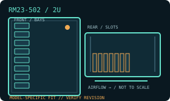

[ MODEL IDENTIFICATION // RM23-502 ]
SilverStone RM23-502 2U rackmount chassis
A 2U rack chassis with model-specific drive, PSU and expansion layouts. Match the enclosure revision, backplane and rail kit before installation.

MODEL NOTE: This record covers the RM23-502 only. Options, revision-dependent PSU support and installed bay modules may change fit; verify labels and the manufacturer manual before buying replacement parts.
Dimensions & fit specifications
| Rack units / external dimensions | 2U; 430 × 88.5 × 580 mm (W × H × D); allow extra depth for rails and rear cable bend/service access. |
|---|---|
| Motherboard compatibility | ATX (305 × 244 mm), Micro-ATX and Mini-ITX. |
| PSU / power compatibility | PS/2 ATX supply up to 180 mm long; standard supply is not included. This version’s internal drive mounts are direct chassis mounts; no hot-swap backplane is specified. |
| Drive bays / backplane | Two external 5.25-inch bays; five internal 3.5-inch and one internal 2.5-inch drive positions. No hot-swap cage/backplane is listed for this configuration. |
| Riser / PCIe | Seven low-profile PCI/PCIe expansion slots; verify the motherboard slot map and card height before selecting add-in cards. No riser is specified as standard. |
| Cooling / service clearances | Front bracket supports up to three 80 × 38 mm fans and rear has a 60 mm fan position. Keep low-profile CPU cooling within the 2U envelope and leave rear clearance for airflow and service; confirm included fan population on the exact sales revision. |
Compatibility & service notes
This is the conventional internal-drive RM23-502 layout, not a hot-swap RM21/RM22 server chassis. Do not assume an internal backplane, hot-swap trays or tool-less service without a separately documented kit.
- Measure the complete installed depth: chassis, rack ears/slides, cable-management arm if fitted, connectors and cable bend radius.
- Maintain clear front intake and rear exhaust access; do not obstruct removable fan, drive, PSU or backplane service paths.
- Before hot-swap work, confirm the controller/backplane interface and follow the chassis manual’s power-down and ESD procedure.
Manufacturer sources
- SilverStone — RM23-502 product specificationsManufacturer product page for the 2U chassis and drive/board fit.
- SilverStone — RM23-502 product sheet (PDF)Manufacturer product sheet with mechanical layout and model specifications.